Strategy builder ♟️
Traders don’t think in strikes. They think in outcomes.
Every options builder on the market makes traders translate an idea into legs, strikes, and forms. I designed a workbench that skips the translation — state the goal, get the trade, shape it by touch.
AT A GLANCE
One engine. Three moves.
The Strategy Terminal gives option sellers a goal-first workbench built around three accelerators — each one removes a step every competing builder still forces.
-
MOVE 01 · GENIE
Creation by intent
Name the outcome — POP, range, profit — and a solver returns real strikes in one click. “Make a wish — granted.”
-
MOVE 02 · SKETCH
Shaping by touch
The payoff chart is the build surface. Add legs, roll strikes, move whole sides — by dragging, not by forms.
-
MOVE 03 · ADJUST
Adjustment without anxiety
On a live position: mark every change, compare before → after, execute once. Nothing fires until you say so.
THE PROBLEM
Every builder forces the same detour
Pick a view. Open the chain. Hunt strikes. Assemble legs. Check if it matches the idea. Repeat until it does.
That’s the path every strategy builder in the market forces — Sensibull, Opstra, broker terminals, all of them. It treats the option chain as the starting point, when the chain is actually the last thing a trader should need to touch.
Here’s the insight the whole product is built on: the trader already knew the outcome before they opened the app. “I want an 80% chance of profit if NIFTY stays between 23,400 and 23,900.” That’s a complete specification of a trade. Everything after that sentence — the strikes, the legs, the widths — is translation work the software should do, not the human.
Three specific pains, three specific answers
| PAIN TODAY | COST TO THE TRADER | OUR ANSWER |
|---|---|---|
| Strike-hunting | The idea → legs translation is manual, slow, and error-prone. Traders juggle a chain, a calculator, and a payoff preview across tabs. | Genie — solve for strikes from the stated goal. |
| Form-based editing | Reshaping a trade means editing rows and dialogs, then re-checking the payoff. The feedback loop is broken in half. | Sketch — the payoff chart is directly manipulable; metrics update as the hand moves. |
| Adjustment fear | Modifying a live position means firing orders one at a time, half-blind, with real money moving between each click. | Adjust — mark, compare, execute once. Zero orders until explicit commit. |
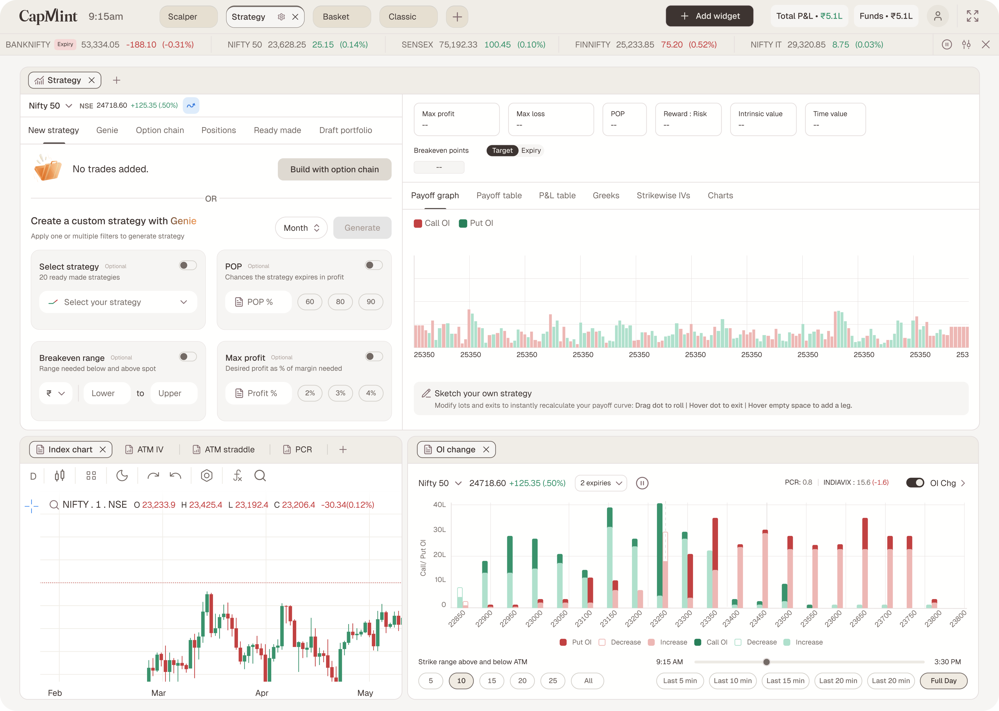
Creation by intent. Shaping by touch. Adjustment without anxiety.
THE DESIGN
A three-widget workbench
The Strategy view loads three widgets on the Web 2.0 modular canvas — drag, resize, tab, group. The builder spans the top; context sits beneath it. The principle: one widget, one job. Build in one place, read the market in another, never leave the view.
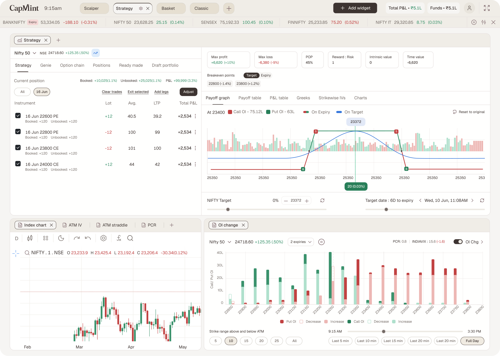
-
WIDGET 1
Strategy Builder
The workbench. Build panel (left) with six tabs; payoff & analytics pane (right) that recalculates the instant anything changes. Sketch lives on this chart.
-
WIDGET 2
Analysis Charts
Five read-only context tabs — ATM IV, PCR, Options chart, Index chart, ATM straddle. The volatility, sentiment, and price read a seller takes before committing strikes.
-
WIDGET 3 · NEW
OI Change
A widget that didn’t exist before: Call/Put OI and change by strike around ATM, PCR + India VIX readout, strike-range and time-of-day controls, multi-expiry select.
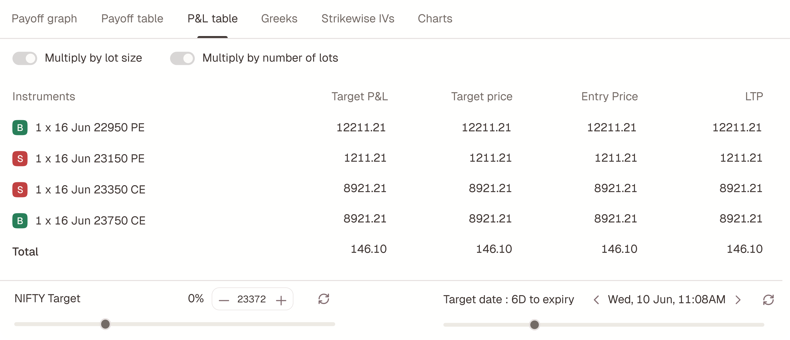
The payoff & analytics pane
Everything a decision needs, in one glance: a metric strip (Max profit · Max loss · POP · Reward:Risk · Intrinsic · Time value), breakevens with a Target/Expiry toggle, six payoff views as tabs, On-Target and On-Expiry curves drawn over an OI backdrop, a NIFTY target slider, a target-date stepper, and Undo / Reset. This pane is not a preview — it’s the primary surface. Sketch gestures act directly on it.
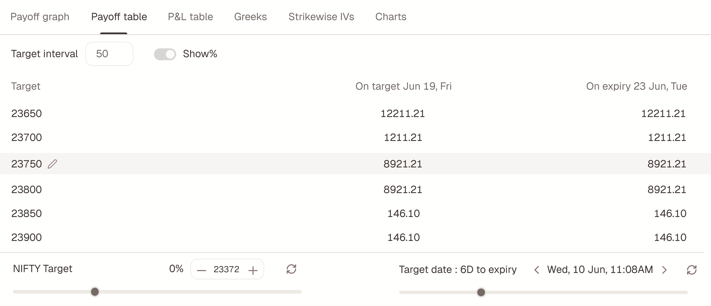
MOVE 01 · GENIE
Make a wish. Get real strikes.
Genie inverts the builder: instead of assembling legs and checking the outcome, you state the outcome and the solver assembles the legs.
The wish has four inputs — each optional, each independently selectable. Set one, several, or all four; hit Generate; the solver returns the closest fit across every active wish and drops real, editable legs into the build panel.
| WISH | INPUT |
|---|---|
| Strategy shape | Pick a shape from the ready-made set — or leave it to the solver. |
| POP % | Chance of expiring in profit. Presets: 60 / 80 / 90. |
| Breakeven range | Range to hold below & above spot, in ₹ or %. |
| Max profit | Desired profit as % of margin. Presets: 2% / 3% / 4%. |
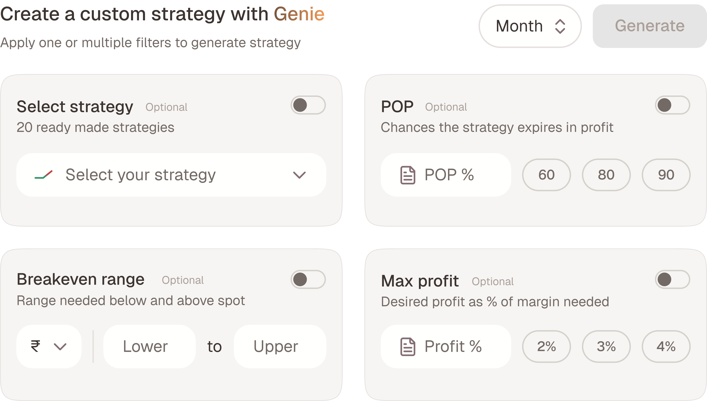
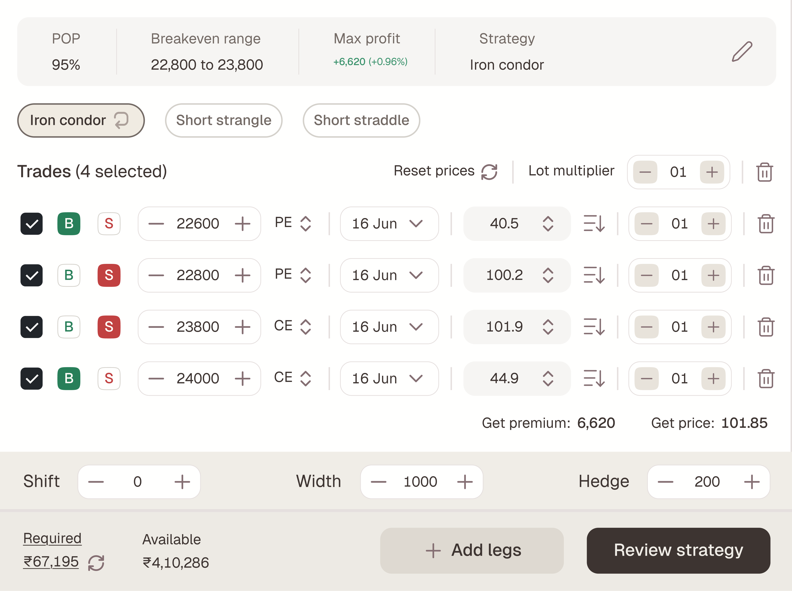
A solver you can’t audit is a black box. A solver that admits its trade-offs is a colleague.
And critically: Genie’s output is just a strategy. Every leg is editable in the trade list and draggable on the payoff. Genie hands off — it doesn’t lock. That single decision is what keeps an “AI-ish” feature from feeling like a gimmick to professional traders.
MOVE 02 · SKETCH
The payoff chart is the build surface
Traders already stare at the payoff diagram — it’s the picture in their head. Sketch makes that picture directly manipulable. No option chain, no edit dialogs.
Start from an empty chart — just axes and strikes — or shape a strategy Genie generated or a position you loaded. Every gesture maps to a real trading operation:
| GESTURE | RESULT |
|---|---|
| Hover empty space | A + snaps to the nearest 50-pt strike → menu offers Call: Buy/Sell, Put: Buy/Sell → the leg lands. Available everywhere. |
| Drag a dot | That single leg rolls to the next real strike. |
| Drag a side | Both end legs move together — slopes and the flat top — with width held. |
| Delete a leg | Removes it from the structure via the leg control / trade list. |
Strikes, premiums, breakevens, POP — every metric updates live as the hand moves. The feedback loop that form-based builders break in half becomes a single continuous motion: think, drag, see.
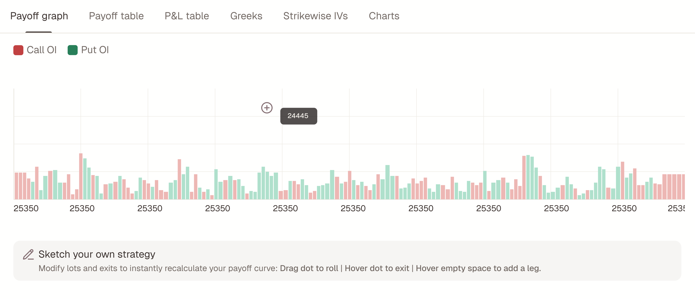
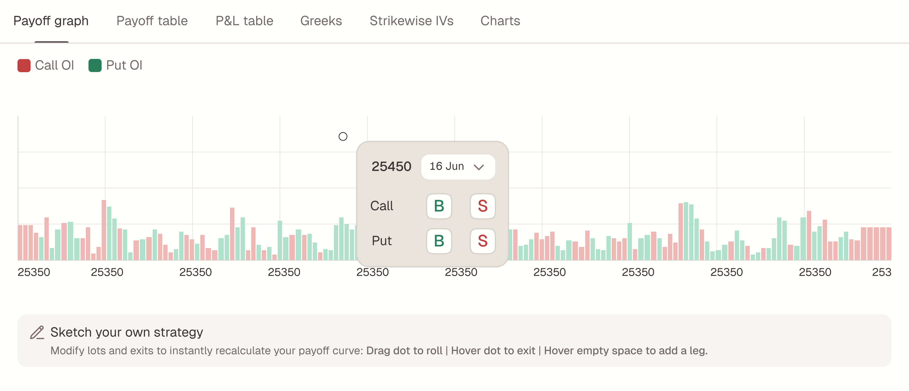
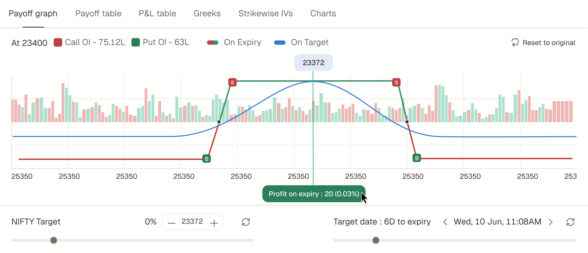
A restraint decision I’d defend in any review
While creating, a payoff dot can only be dragged to roll. No exit toggle, no lot-change on hover — those live exclusively in Adjust mode. Why? Because a surface that does everything everywhere teaches nothing. Create-mode gestures answer one question — “what shape do I want?” — and adjustment gestures answer a different, riskier one — “what do I change on live money?” Splitting the gesture vocabulary by mode keeps each one learnable and makes the dangerous one deliberate.
MOVE 03 · ADJUST
Mark. Compare. Execute once.
Adjusting a live position is the highest-anxiety moment in options trading — real money moves with every click. Adjust’s core contract: nothing fires until you say so.
Open Positions, click a group to load it, enter adjustment mode. Every change is a mark — an intention, not an order. And there are two ways to mark, writing to the same set:
-
FROM THE TRADE LIST
Precision path
Each row gains a New-lot field (typeable, +/− nudge), a Mark-exit toggle, and an Adjustments column showing every mark as a pill — REDUCE LOT 12 → 01, ROLL 24120 → 24220, NO CHANGE.
-
FROM THE PAYOFF CHART
Spatial path
Hover a dot → a popover for that exact leg with a New-lot stepper and Mark-exit toggle; drag the dotted curve to roll. Every chart mark writes back to the trade list as the matching pill.
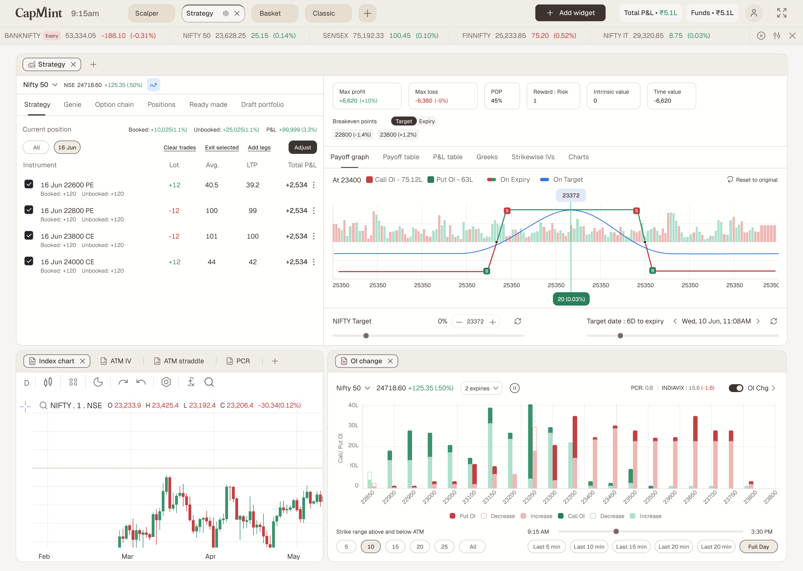
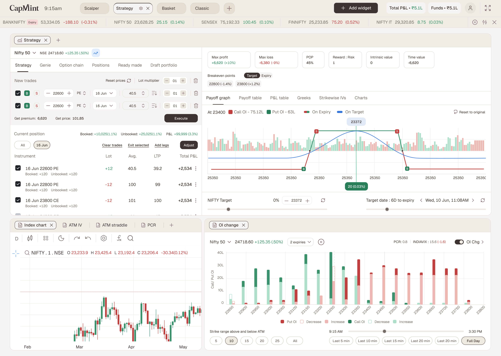
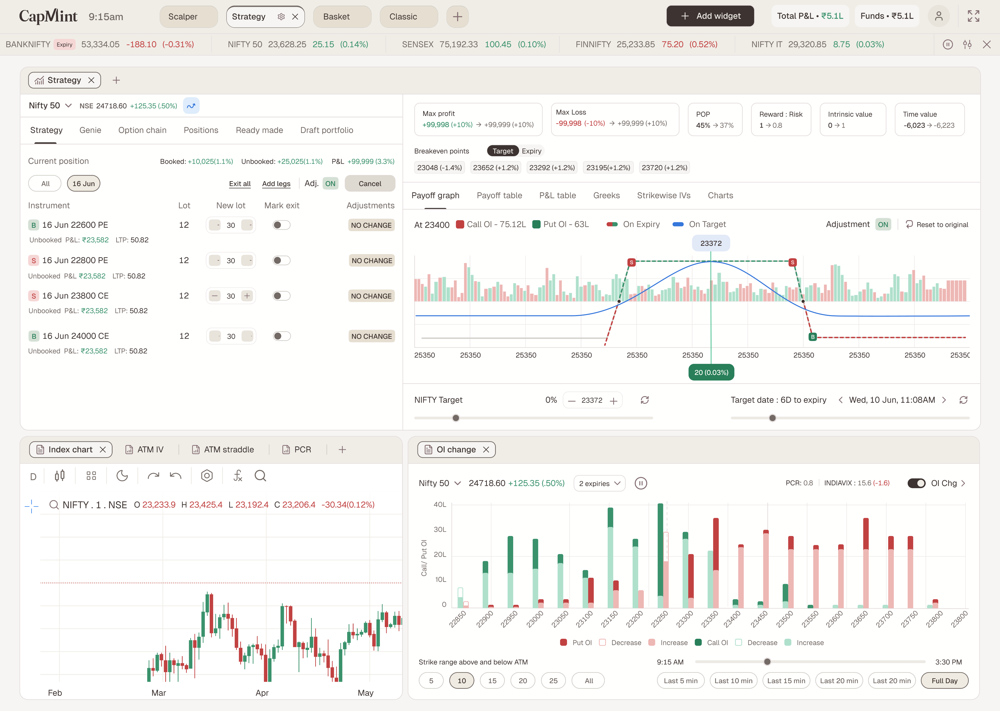
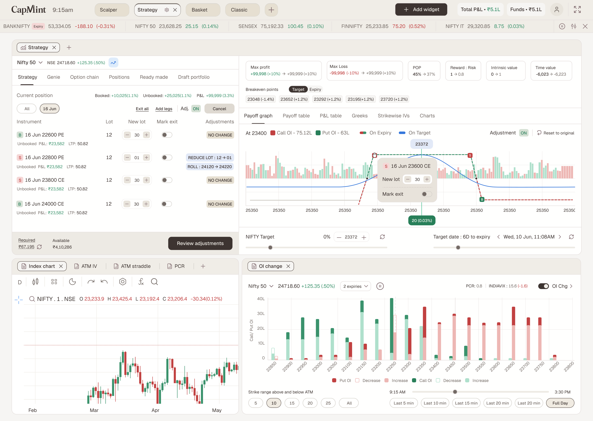
The comparison is the product
Existing position: solid grey ghost. Adjusted: dotted green/red. Every metric reads before → after — max profit, max loss, POP, reward:risk, breakevens, intrinsic and time value. The trader sees the complete consequence of their marks as one picture, then chooses.
Execute adjustments fires all marked exits, reductions, rolls, and new legs together, as one batch. Cancel discards every mark. There is no third state — no half-applied position, no “oops, only the first two legs went through.”
Every other terminal makes you adjust with live rounds. We gave traders a dry-run.
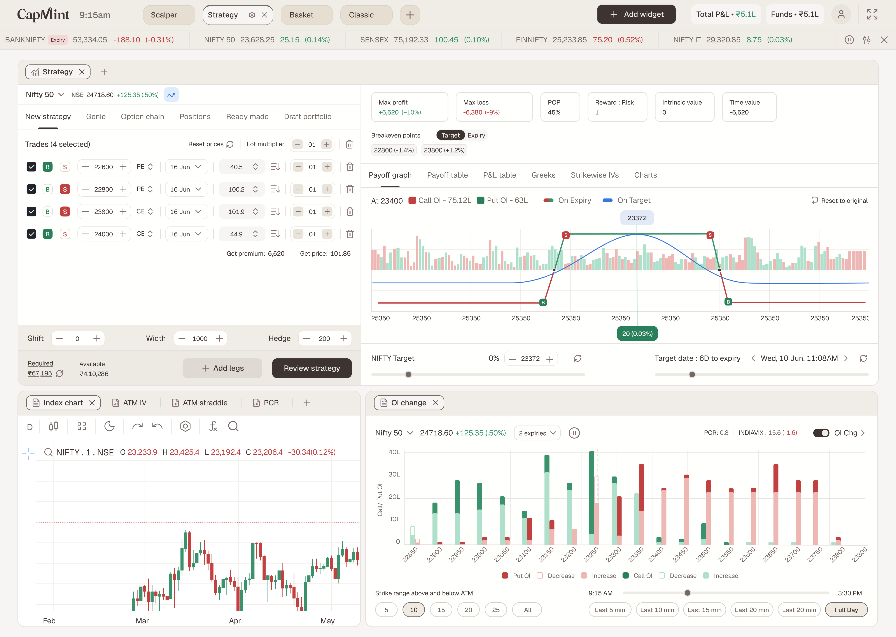
MEASURING SUCCESS
What I’d watch
To measure the impact of Strategy Builder, we focused on three key data points: retention, adoption of core features like Genie and Sketch, and depth of engagement — such as how many users actively adjust their positions.
Retention tells us whether the product is becoming a habit, while feature usage shows whether the core value proposition is landing. Together, these metrics capture not just how many users come back, but how meaningfully they engage with the product.
-
Retention improvement
From 16% to 18%
As the traders found a new way to create their strategy they shared the feedback of how it’s improving the experience with optimising the time.
-
Genie usage
35% of all web users
Genie is giving the traders the flexibility about choosing their return or POP to get the desired ROC on their capital employed and track it easily.
-
Sketch usage
12% of all users
By drawing on the surface is an easy tool for the traders to create their own strategies with their own risk appetite and reward opportunity.
REFLECTION
What this project taught me
The best interface deletes a translation, not a click. Counting taps is optimization; removing the idea-to-legs translation is invention. The former makes a product better, the latter makes it different.
Trust is designed in the failure cases. Genie’s amber chips, “Unlimited” instead of a fake number, the ghost-vs-dotted comparison — the moments where the product admits limits are the moments professionals decide to rely on it.
Restraint is a feature. The hardest calls weren’t what to add — they were keeping create-mode gestures minimal, keeping the chain as the honest base path, and keeping Execute deliberately slow. In a domain where a mis-click costs real money, what the interface refuses to do is part of what it offers.